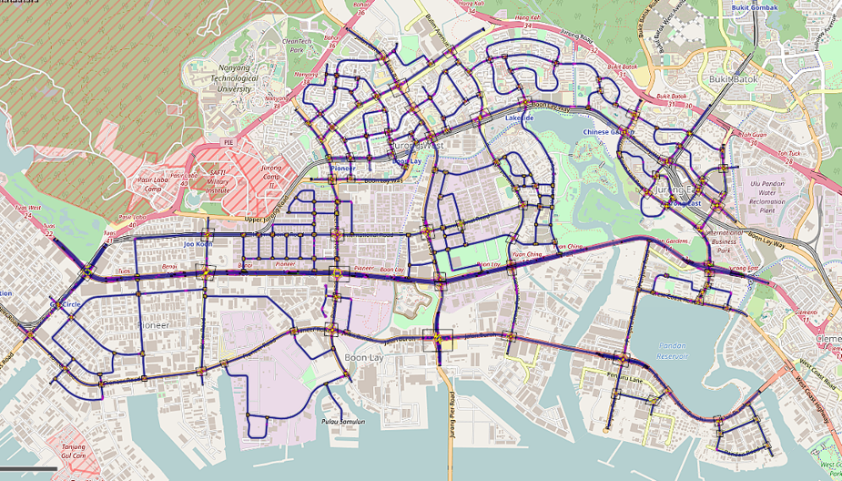
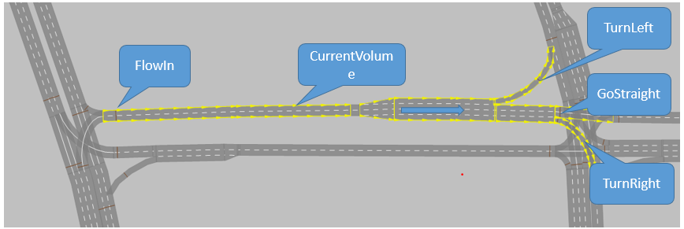

|
Simulation using PTV Vissim
Summary
|
 |
Our group members has developed a traffic light scheduler algorithm aiming to reduce the traffic congestion in Singapore, a reliable simulated traffic network helps to examine the efficiency of the scheduler algorithm before on-site testing.
In this project, a group of FYP students worked with me to develop the Jurong Area Simulation Network (use PTV Vissim) with more than 200 signalized & non-signalized intersections that covers both urban areas and industrial areas.
|
Contributions
Simulation using PTV Vissim
|
 |
-
Upstream Flow
Downstream Flow
Link Volume
Turning Ratio …
|
Reference
Y. Zhang, R. Su, Y. Zhang and C. Sun. “Modelling and Traffic Signal Control of Heterogeneous Traffic Systems.” arXiv, 2017.
Y. Zhang, R. Su, C. Sun. Modelling and traffic signal control of a heterogeneous traffic network with signalized and non-signalized intersections. 2017 IEEE Conference on Control Technology and Applications, Kohala Coast. 2017
|